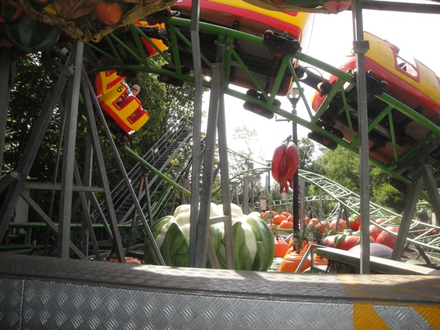
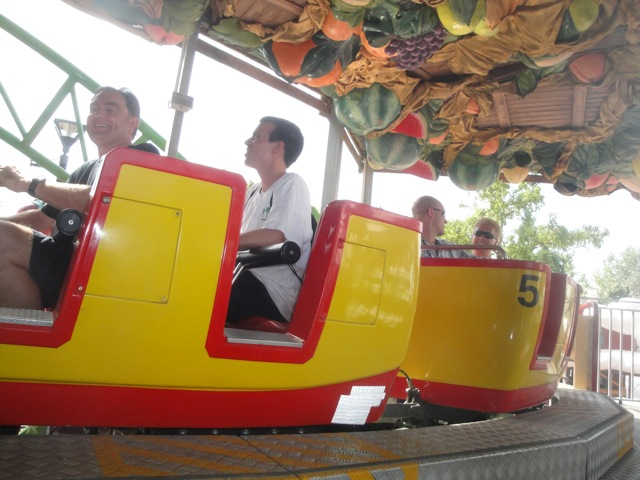
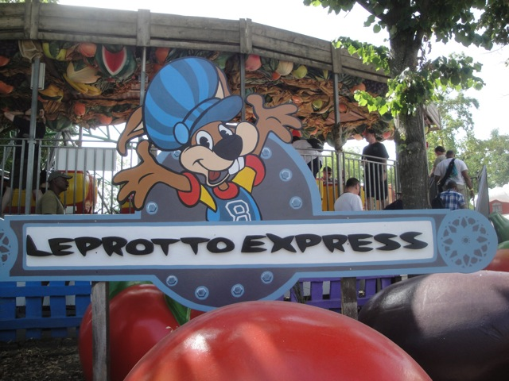

| |
Leprotto Express Review

We're here at Mirabilandia, where we'll be reviewing their kiddy coaster. Leprotto Express. Get in, pull down the lap bar, and lets just get this over with. We climb the lifthill, and head down a small curved drop. For a kiddy coaster, its fun. We head around a turnaround, get a couple laterals, which are not exactly comfortable on a kiddy coaster. We head over a small hill, look at the plastic fruit scenery, drop down and head around another turnaround. No laterals though. Go through a small dip and into the brake run. Not bad. Definetly one of the better kiddy coasters. But yeah. This is total credit whoring.
2/10
Location: Mirabilandia
Opened: 2005
Built by: L&T
Last Ridden: June 20, 2012
Leprotto Express Photos


Home
|